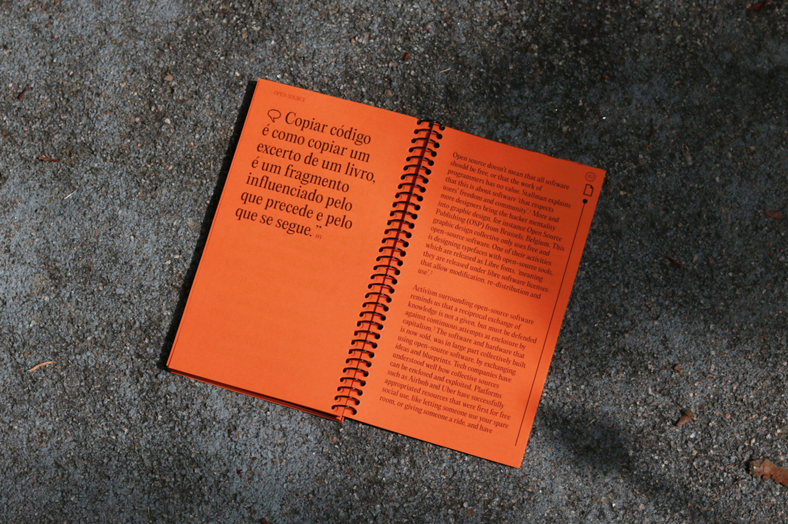

Ana Leite likes to invent new creations, find solutions where there are problems, disquiet if there’s a question and challenge if there’s margin. She looks for opportunities to work in a team and to develop new skills, from looking for contests and new projects, to volunteering and youth associationism. Furthermore, she has a degree in Communication Design and so is a newcomer to the so-called nine-to-five world (even that isn’t quite how she thinks it is!)
Website designed and coded by myself in August 2022
Fonts in use
Editorial New, Pangram Pangram Foundry, by Mathieu Desjardins and Francesca Bolognini
Karla Sans Serif by Jonny Pinhorn
cookies
Web Design
2021
a nostalgia é uma borracha mágica para verdades atrozes
Editorial Design
2021
r-ves
Visual Indentity
2021
sem rede / sans réseau
Identity for Exhibition
2022
://the site of the website
Editorial Design
2022
0porcent0
Web Design
2022
cookies
The way the user’s internet data is processed is communicated to them by a popup that appears disturbingly on the screen, and so, it tends to be closed quickly, without giving it too much thought. These are the famous Cookies.
The website created in this project is structured as a narrative, for a clear explanation of what these Cookies are. On a horizontal scroll, as a timeline, this story is told in parallel with the story of another cookie, the edible one!
Web Design 2021
Academic Project FBAUP
Visit website here🡥
a nostalgia é uma borracha mágica para verdades atrozes
In a pandemic context where the functioning of clubs was conditioned, a will was born to go back in the past and remember the crazy parties held at the Bairro Alto nightclub, Frágil, a space of liberation, discovery and booster of Portuguese rock of the 80s and 90s. This photobook emerges from this revisiting of the past through texts and images made available by Frágil in an online photographic collection (fragil.luxfragil.com🡥).
Technical Information
89,1 x 21 cm (open)
14,8 x 21 cm (closed)
144 pages
Team
Ana Leite
Eduarda Fernandes
Luana Barbosa
Thiago Liberdade
Editorial Design 2020
Academic Project FBAUP
r-ves
R-VES is a volunteer organization made up of several Portuguese Collages. The visual identity of the organization was developed in a national contest open to all university students. This was the winning proposal.
The representation of the initial of the name appears as a way of easy identification of the letter as a symbol of the organization. The shape created is easily translated into a smile, with circular and cyclic shapes that could be extended in a chain, in a network of connections.
Team
Ana Leite
Sofia Lopes Correia
Visual Indentity 2021
Contest Winner
Universidade do Algarve
.jpg)
.jpg)
SEM REDE / SANS RÉSEAU
Sem rede, Sans Réseau takes us to different interpretations such as the diversity of artworks results of the Sculpture Studio students, Master in Fine Arts, FBAUP.
The points of contact between the artworks are seen as something that supports their purposes, as a trapeze net that supports their creativity. The developed identity is based on the antagonistic spirit of lack of connection and sometimes contamination among these artworks, developed in a common environment.
Technical Information
Poster 59.4 x 42 cm
Room sheet 29.7 x 42 cm
Exhibition catalog website
Visit website here🡥
Team
Ana Leite
Rui Pinto Moreira
Identity for Exhibition 2022
FBAUP Museum
://THE SITE OF THE WEBSITE
This zine, maybe more about questions than answers, it turns out of concerns that appeared with the development of my final project of the degree in communication design; a project of the development of a website.These concerns have become more peaceful by conversations with designers and developers that contributed to this printed publication by sharing their perspectives.
Hence, this zine arises as a collective and under-construction reflection about design for the digital world, meeting dialogues and collection of references, which mark this moment of search about web design. It is split in two parts, the first one, about work and methodology processes, and the second one, a critical reflection on the development of design for digital.
Technical Information
16 x 9 cm
138 pages
Editorial Design 2022
Academic Project FBAUP

0porcent0
0porcent0 is an artistic collective, created in 2020, by Ana Leite and Inês Mendes. The collective born of the will to talk about contemporaneity and the artistic world. 0% appears as a starting point, as awareness that the learning is made of constant 0 points where new knowledge comes from. It is a space for discussion about Design and the Visual Arts, the media and people who think about them.
This website was developed in the context of my final degree project. Comes into shape by the expansion of wheel-change dynamics from collective conversations to a digital platform. It is a space of interaction, an archive of activities and references discussed.
Visit website here🡥
Web Design 2022
Academic Project FBAUP